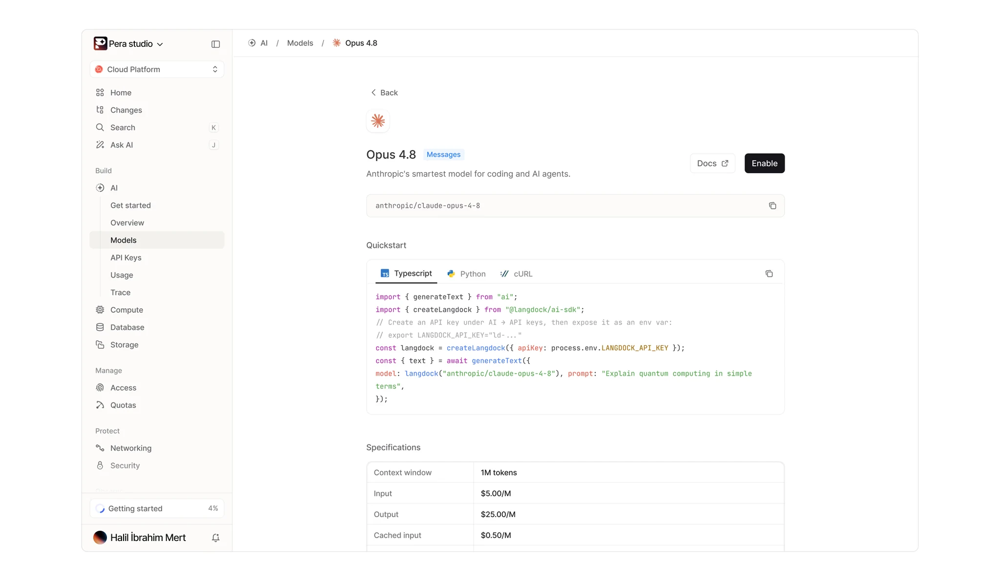
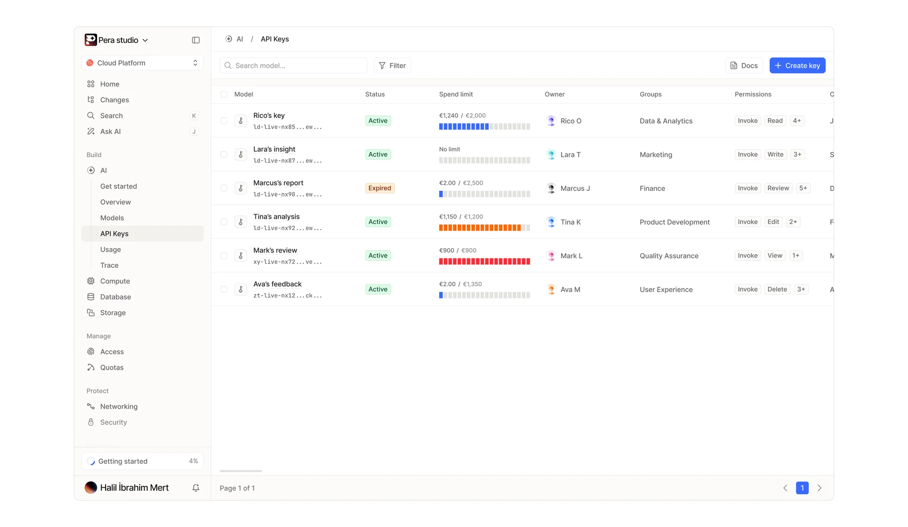
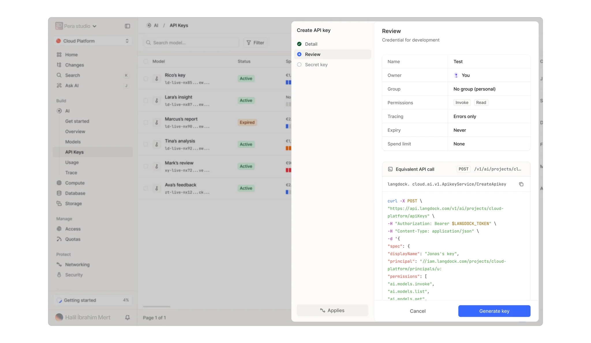
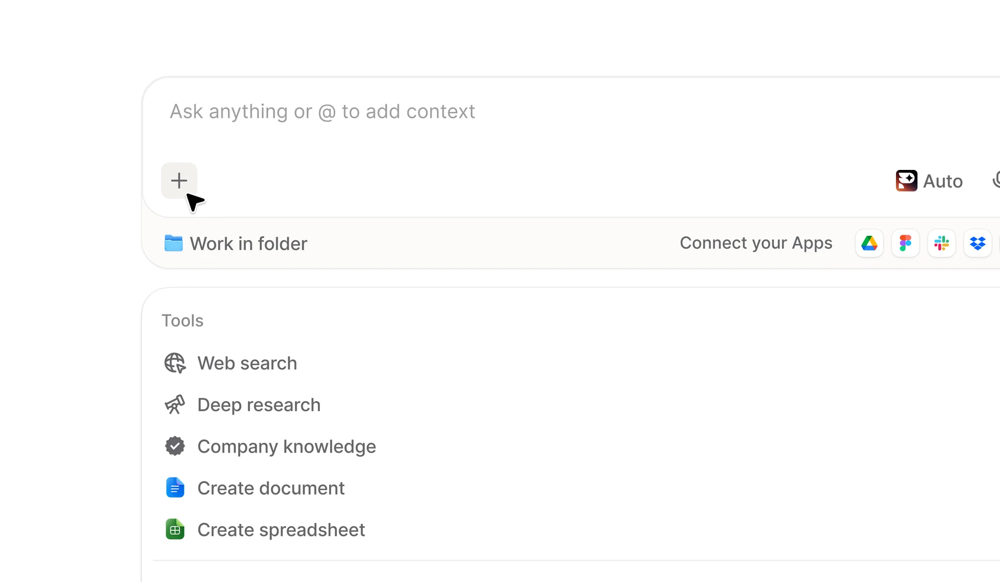
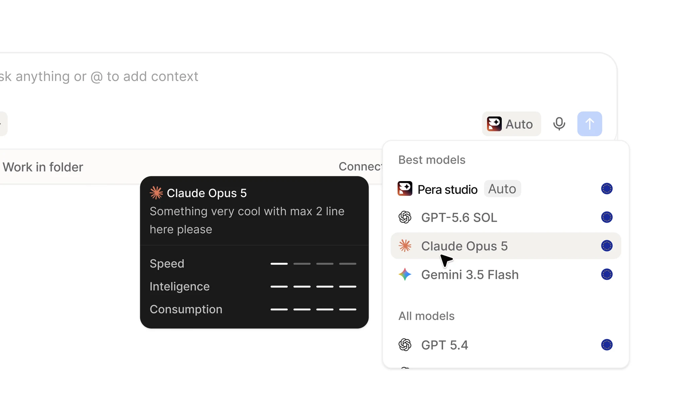
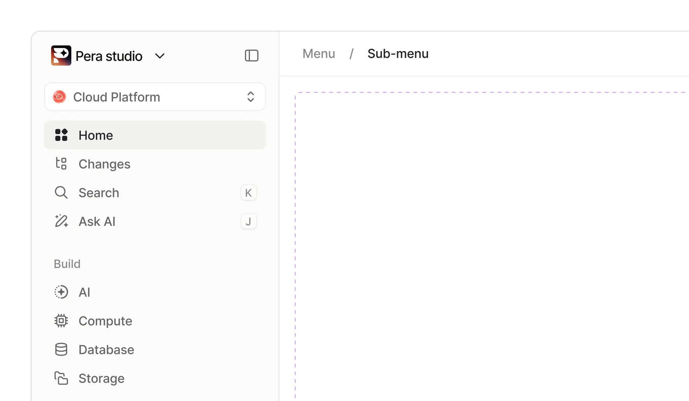
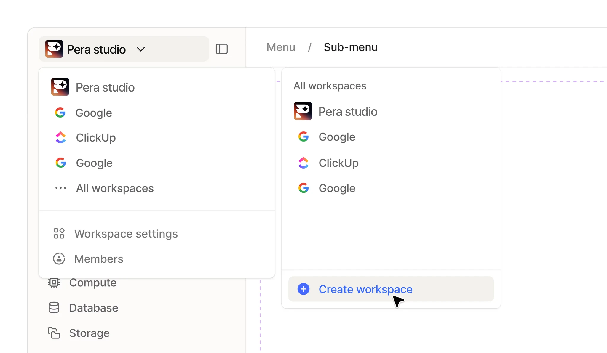
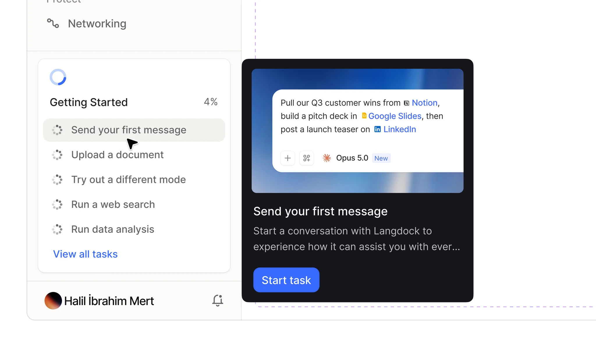

Name
Pera
Overview
A secure AI workspace unifying chat, company knowledge, agents, integrations and workflows in one platform. The redesign kept everyday use simple for most users while giving power users the depth to build and manage complex automations.
Scope
Product Design, Rebranding, Product Identity, Design System







